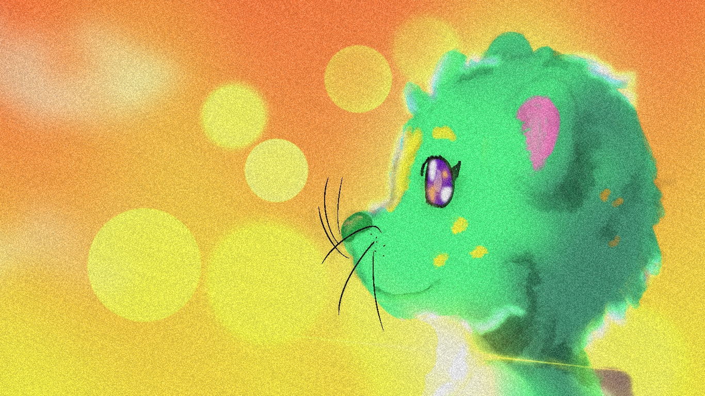
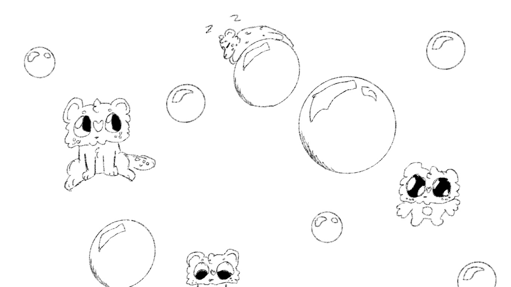

Hello! Welcome to LimeGreenOtter's webpage! Limegreenotter is a pngtuber, artist, developer, musician, and so much more. This webpage is an attempt to capture and catalog some of my many talents, in a friendly and easy to understand format.
One of my many hobbies includes art, whether it's drawing painting, or digital art. As you can see the picture on the right, that's an illustration of me that I made! I feel like art is able to help us understand or convey stories or emotions that normal words can't suffice.
A few talents you might not see on this page are game development and musci composing. Howeve you can find them by clicking on of teh links on the left, such as my itch.io page where I have one published game so far that I acctually finished. Or you could check out the music I've made on my Youtube channel.

This is an example of one of my many animations, I'm still learning and making progress each time I try. I love animation I think it's such a great medium of art. I animate original characters I've made, as well as just some animation test as well. I mainly use the app Procreate Dreams for animation.
I also stream on twitch sometimes, however this is just a video i've exclusively posted on this website just to show you some of the game play of one of the games I play. This game I'm playing is called The Long Dark by Hinterland studios. I've rewatched this footage a bunch of times and I still cannot figure out wher teh wolf came from, one momment it's far away and the next it's literally attacking me! To see just teh jumpscare it's 3/4th of the way into the video.